财政部
关于印发《新旧社会保险基金会计制度有关衔接问题的处理规定》的通知
财会〔2017〕29号
人力资源社会保障部、国家卫生计生委，各省、自治区、直辖市、计划单列市财政厅（局），新疆生产建设兵团财务局：
为适应社会保障体系建设需要，进一步规范社会保险基金的会计核算，提高会计信息质量，我部修订印发了《社会保险基金会计制度》（财会〔2017〕28号）。修订后的《社会保险基金会计制度》自2018年1月1日起施行。为确保新旧制度顺利衔接、平稳过渡，促进新制度的有效贯彻实施，我部制定了《新旧社会保险基金会计制度有关衔接问题的处理规定》，现予印发，请遵照执行。
执行中有何问题，请及时反馈我部。
附件：社会保险基金会计制度
财政部
2017年11月28日
附件：
新旧社会保险基金会计制度有关衔接问题的处理规定
财政部对《社会保险基金会计制度》（财会〔1999〕20号）、《新型农村合作医疗基金会计制度》（财会〔2008〕1号）和《新型农村社会养老保险基金会计核算暂行办法》（财会〔2011〕3号）等社会保险基金相关会计制度（以下简称原制度）进行了全面整合和修订，于2017年11月28日发布了新《社会保险基金会计制度》（财会〔2017〕28号）（以下简称新制度），自2018年1月1日起施行。为了确保新旧制度顺利过渡，现对社会保险经办机构（以下简称经办机构）经办社会保险基金执行新制度有关衔接问题规定如下：
一、新旧制度衔接总要求
（一）自2018年1月1日起，经办机构应当严格按照新制度的规定对社会保险基金进行会计核算和编报财务报表。
（二）经办机构应当按照本规定做好新旧制度的衔接。相关工作包括以下几个方面：
1.根据原账编制2017年12月31日的科目余额表。
2.按照新制度设立2018年1月1日的新账。
3.将2017年12月31日原账科目余额按照本规定进行调整，按调整后的科目余额编制科目余额表，作为新账各会计科目的期初余额。上述“原账科目”指原制度规定的会计科目，以及参照财政部印发的相关补充规定增设的会计科目。
新旧会计科目对照情况参见本规定附表。
4.根据新账各会计科目期初余额，按照新制度编制2018年1月1日期初资产负债表。
（三）及时调整会计信息系统。经办机构应当对原有会计核算软件和会计信息系统及时进行更新和调试，正确实现数据转换，确保新旧账套的有序衔接。
二、将原账科目余额转入新账
（一）基本养老保险基金。
1.资产类。
（1）“现金”、“收入户存款”、“支出户存款”、“财政专户存款”、“国库存款”、“暂付款”和“债券投资”科目。
新制度设置了“库存现金”、“收入户存款”、“支出户存款”、“财政专户存款”、“国库存款”、“暂付款”和“债券投资”科目，其核算内容与原账中上述相应科目的核算内容基本相同。转账时，应将原账中上述科目的余额直接转入新账中相应科目。新账中相应科目设有明细科目的，应将原账中上述科目的余额加以分析，分别转入新账中相应科目的相关明细科目。
（2）“应收委托投资收益”、“委托投资”科目。
新制度设置了“委托投资”科目，并在该科目下设置“本金”、“投资收益”等明细科目。按照《财政部关于做实企业职工基本养老保险个人账户中央补助资金投资会计核算有关问题的通知》（财会〔2014〕19号）规定对委托投资进行会计处理的，应将原账中“应收委托投资收益”科目的余额转入新账中“委托投资——投资收益”科目，将原账中“委托投资”科目的余额转入新账中“委托投资——本金”科目。
2.负债类。
（1）“暂收款”科目。
新制度设置了“暂收款”科目，其核算内容与原账中“暂收款”的核算内容基本相同。转账时，应将原账中“暂收款”科目的余额加以分析，分别转入新账中“暂收款”科目的相关明细科目。
（2）“临时借款”科目。
新制度未设置“临时借款”科目，但设置了“借入款项”科目，其核算内容与原账中“临时借款”科目核算内容基本相同。转账时，应将原账中“临时借款”科目的余额加以分析，分别转入新账中“借入款项”科目的相关明细科目。
3.净资产类。
“基本养老保险基金”科目。
新制度未设置“基本养老保险基金”科目，但设置了“一般基金结余”科目。转账时，应将原账中“基本养老保险基金”科目的余额直接转入新账中“一般基金结余”科目。
4.收入支出类。
由于原账中收入支出类科目年末无余额，不需进行转账处理。自2018年1月1日起，应当按照新制度设置收入支出类科目并进行账务处理。
（二）基本医疗保险基金。
1.资产类。
“现金”、“收入户存款”、“支出户存款”、“财政专户存款”、“国库存款”、“暂付款”和“债券投资”科目。
新制度设置了“库存现金”、“收入户存款”、“支出户存款”、“财政专户存款”、“国库存款”、“暂付款”和“债券投资”科目，其核算内容与原账中上述相应科目的核算内容基本相同。转账时，应将原账中上述科目的余额直接转入新账中相应科目。新账中相应科目设有明细科目的，应将原账中上述科目的余额加以分析，分别转入新账中相应科目的相关明细科目。
2.负债类。
（1）“暂收款”科目。
新制度设置了“暂收款”科目，其核算内容与原账中“暂收款”的核算内容基本相同。转账时，应将原账中“暂收款”科目的余额加以分析，分别转入新账中“暂收款”科目的相关明细科目。
（2）“临时借款”科目。
新制度未设置“临时借款”科目，但设置了“借入款项”科目，其核算内容与原账中“临时借款”科目核算内容基本相同。转账时，应将原账中“临时借款”科目的余额加以分析，分别转入新账中“借入款项”科目的相关明细科目。
3.净资产类。
“基本医疗保险统筹基金”和“医疗保险个人账户基金”科目。
新制度未设置“基本医疗保险统筹基金”、“医疗保险个人账户基金”科目，但设置了“一般基金结余”科目，并在该科目下设置了“统筹基金”、“个人账户基金”明细科目。转账时，应将原账中“基本医疗保险统筹基金”科目的余额转入新账中“一般基金结余——统筹基金”科目，将原账中“医疗保险个人账户基金”科目的余额转入新账中“一般基金结余——个人账户基金”科目。
4.收入支出类。
由于原账中收入支出类科目年末无余额，不需进行转账处理。自2018年1月1日起，应当按照新制度设置收入支出类科目并进行账务处理。
（三）失业保险基金。
1.资产类。
“现金”、“收入户存款”、“支出户存款”、“财政专户存款”、“国库存款”、“暂付款”和“债券投资”科目。
新制度设置了“库存现金”、“收入户存款”、“支出户存款”、“财政专户存款”、“国库存款”、“暂付款”和“债券投资”科目，其核算内容与原账中上述相应科目的核算内容基本相同。转账时，应将原账中上述科目的余额直接转入新账中相应科目。新账中相应科目设有明细科目的，应将原账中上述科目的余额加以分析，分别转入新账中相应科目的相关明细科目。
2.负债类。
（1）“暂收款”科目。
新制度设置了“暂收款”科目，其核算内容与原账中“暂收款”的核算内容基本相同。转账时，应将原账中“暂收款”科目的余额加以分析，分别转入新账中“暂收款”科目的相关明细科目。
（2）“临时借款”科目。
新制度未设置“临时借款”科目，但设置了“借入款项”科目，其核算内容与原账中“临时借款”科目核算内容基本相同。转账时，应将原账中“临时借款”科目的余额加以分析，分别转入新账中“借入款项”科目的相关明细科目。
3.净资产类。
“失业保险基金”科目。
新制度未设置“失业保险基金”科目，但设置了“一般基金结余”科目。转账时，应将原账中“失业保险基金”科目余额直接转入新账中“一般基金结余”科目。
4.收入支出类。
由于原账中收入支出类科目年末无余额，不需进行转账处理。自2018年1月1日起，应当按照新制度设置收入支出类科目并进行账务处理。
（四）新型农村合作医疗基金。
1.资产类。
（1）“现金”、“收入户存款”、“支出户存款”、“财政专户存款”和“暂付款”科目。
新制度设置了“库存现金”、“收入户存款”、“支出户存款”、“财政专户存款”和“暂付款”科目，其核算内容与原账中上述相应科目的核算内容基本相同。转账时，应将原账中上述科目的余额直接转入新账中相应科目。新账中相应科目设有明细科目的，应将原账中上述科目的余额加以分析，分别转入新账中相应科目的相关明细科目。
（2）“缴存省级风险基金”科目。
新制度未设置“缴存省级风险基金”科目，但设置了“暂付款”科目，并在该科目下设置了“缴存风险基金”明细科目。转账时，应将原账中“缴存省级风险基金”科目余额转入新账中“暂付款——缴存风险基金”科目。
2.负债类。
“暂收款”科目。
新制度设置了“暂收款”科目，核算内容较原账中的“暂收款”科目发生变化，不再核算经办机构在本年度收到的参合农民缴纳的以后年度个人缴费以及收到的其他属于以后年度的基金收入，相应内容转由新制度的“社会保险费收入”科目核算。转账时，如果原账中“暂收款”科目余额中包括在本年度收到的参合农民缴纳的以后年度个人缴费以及收到的其他属于以后年度的基金收入，则应对该科目余额进行分析：将在本年度收到的参合农民缴纳的以后年度个人缴费以及收到的其他属于以后年度的基金收入余额转入新账中“一般基金结余”科目，将剩余余额转入新账中“暂收款”科目的相关明细科目。
3.净资产类。
（1）“统筹基金”科目。
新制度未设置“统筹基金”科目，但设置了“一般基金结余”科目和“风险基金结余”科目。转账时，将原账中“统筹基金——一般统筹基金”科目余额转入新账中“一般基金结余”科目，将原账中“统筹基金——风险基金”科目余额转入新账中“风险基金结余”科目。
（2）“家庭账户基金”科目。
新制度未设置“家庭账户基金”科目，但设置了“一般基金结余”科目。转账时，应将原账中“家庭账户基金”余额直接转入新账中“一般基金结余”科目，并可根据需要在新账中“一般基金结余”科目下设置“家庭账户基金”明细科目予以明细登记。
4.收入支出类。
由于原账中收入支出类科目年末无余额，不需进行转账处理。自2018年1月1日起，应当按照新制度设置收入支出类科目并进行账务处理。
（五）新型农村社会养老保险基金。
1.资产类。
“库存现金”、“收入户存款”、“支出户存款”、“财政专户存款”、“暂付款”和“债券投资”科目。
新制度设置了“库存现金”、“收入户存款”、“支出户存款”、“财政专户存款”、“暂付款”和“债券投资”科目，其核算内容与原账中上述相应科目的核算内容基本相同。转账时，应将原账中上述科目的余额直接转入新账中相应科目。新账中相应科目设有明细科目的，应将原账中上述科目的余额加以分析，分别转入新账中相应科目的相关明细科目。
2.负债类。
“暂收款”科目。
新制度设置了“暂收款”科目，其核算内容与原账中“暂收款”的核算内容基本相同。转账时，应将原账中“暂收款”科目的余额加以分析，分别转入新账中“暂收款”科目的相关明细科目。
3.净资产类。
“基金结余”科目。
新制度未设置“基金结余”科目，但设置了“一般基金结余”科目。转账时，应将原账中“基金结余”科目的余额直接转入新账中“一般基金结余”科目。
4.收入支出类。
由于原账中收入支出类科目年末无余额，不需进行转账处理。自2018年1月1日起，应当按照新制度设置收入支出类科目并进行账务处理。
社会保险基金如有其他原账科目余额，应当参照本规定转入新账中相应科目。
三、财务报表新旧衔接
（一）社会保险基金2018年1月1日期初资产负债表的编制。
经办机构应当根据新账各会计科目期初余额，按照新制度编制2018年1月1日期初资产负债表。
（二）社会保险基金2018年度财务报表的编制。
经办机构应当按照新制度规定编制社会保险基金2018年度的月度、年度财务报表。在编制社会保险基金2018年度收支表时，不要求填列上年比较数。
四、其他衔接事项
经办机构经办的其他各类社会保险基金的新旧衔接问题，参照本规定执行。
附：
新旧社会保险基金会计制度会计科目对照表
附表1：
新旧社会保险基金会计制度会计科目对照表——基本养老保险基金
附表2：
新旧社会保险基金会计制度会计科目对照表——基本医疗保险基金
附表3：
新旧社会保险基金会计制度会计科目对照表——失业保险基金
|
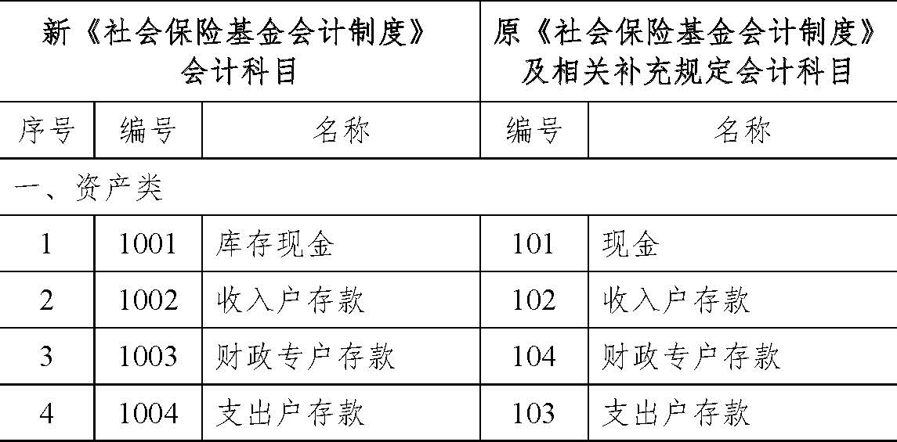
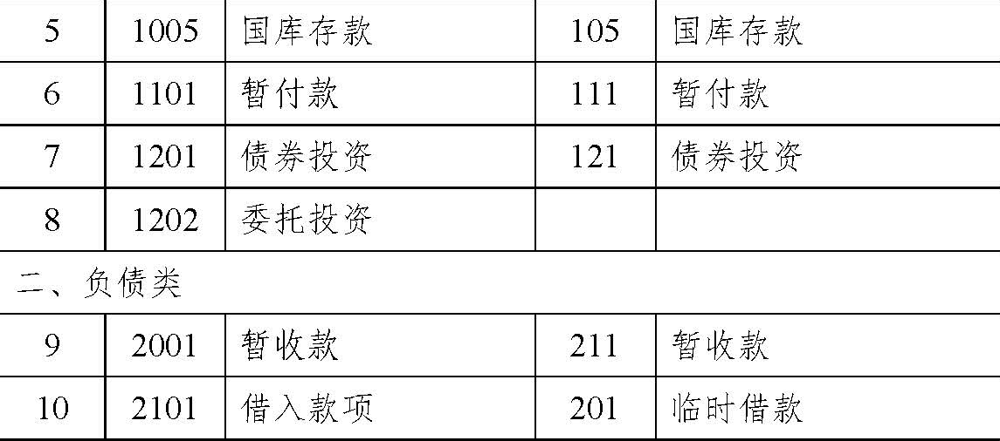
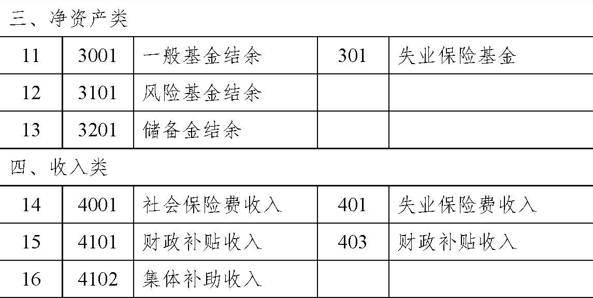
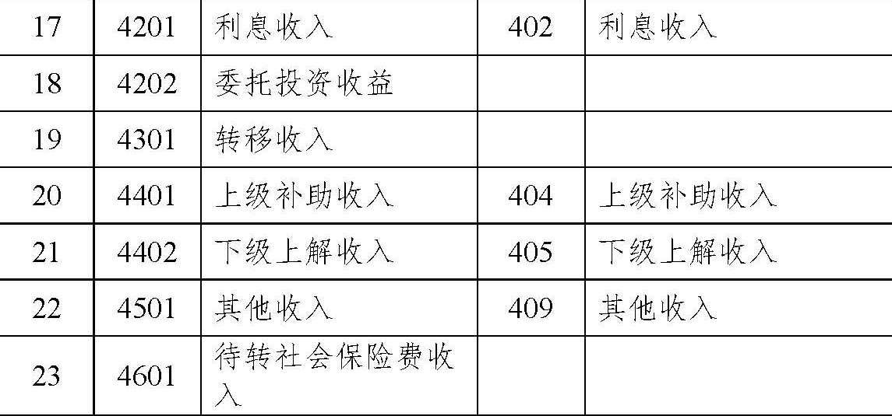
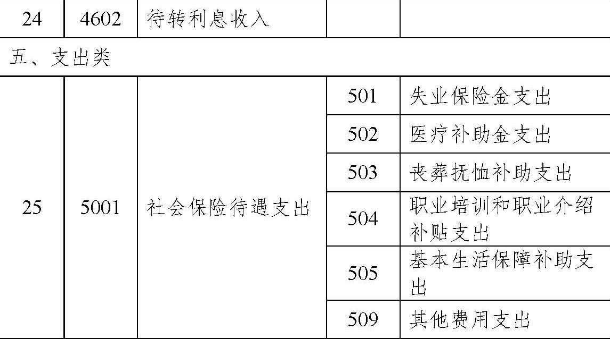
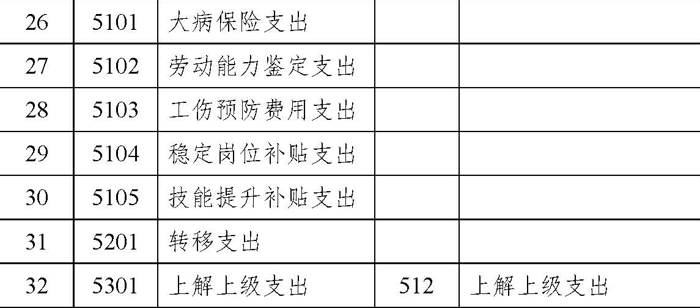
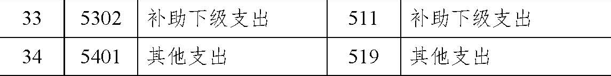
|
附表4：
新旧社会保险基金会计制度会计科目对照表——新型农村合作医疗基金
附表5：
新旧社会保险基金会计制度会计科目对照表——新型农村社会养老保险基金
|
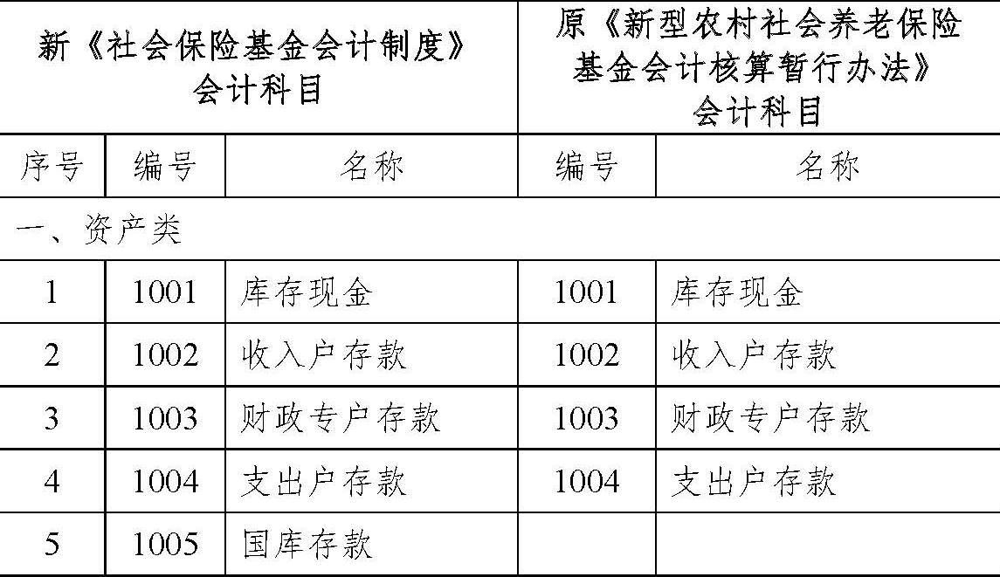
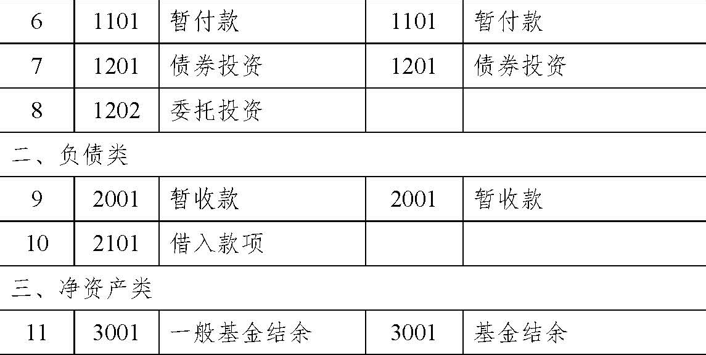
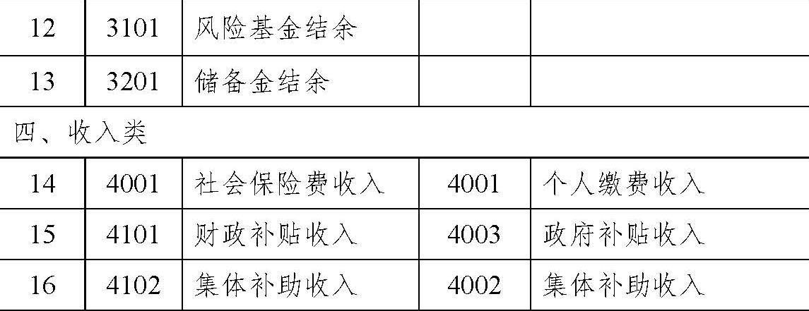
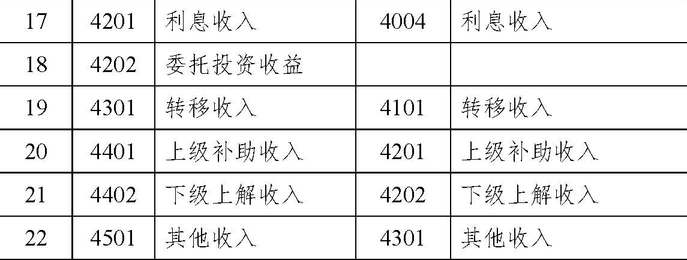
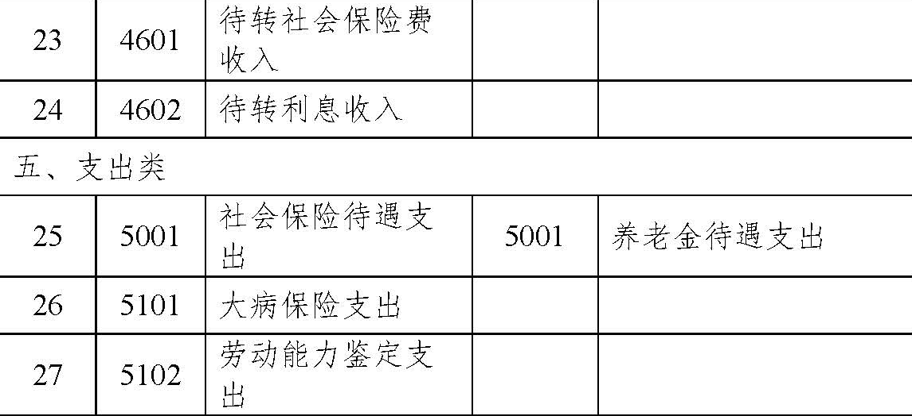
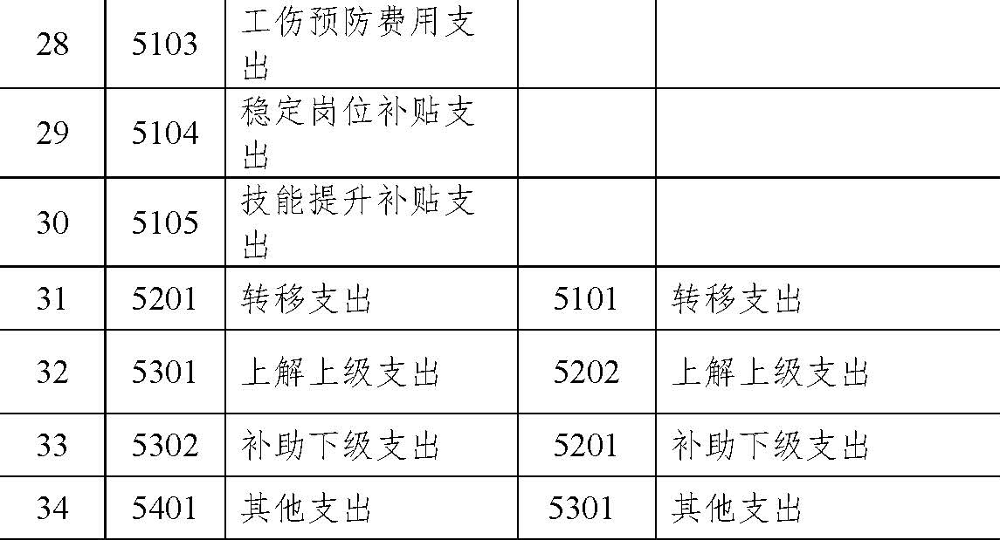
|